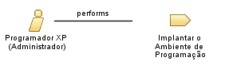

| Role: Programador XP (Administrador) |
 |
|
Relationships
 |
||
| Primary Performs | ||
|---|---|---|
Main Description
|
O papel Programador XP (Administrador) engloba a maioria dos papéis técnicos tradicionais de desenvolvimento de software, tais como designer, implementador, integrador e administrador. No papel administrador, o programador trata do estabelecimento do ambiente físico de trabalho. |
Staffing
| Skills |
O papel Programador XP (Administrador) é responsável em estabelecer o espaço de trabalho para a programação em pares, incluindo a remoção dos cubículos, o estabelecimento do campo visual com o cliente e a padronização das ferramentas de desenvolvimento. |
|---|
| Copyright (c) 2002, 2006 IBM Corporation e Object Mentor. Todos os Direitos Reservados. Este programa e o material que o acompanha são disponibilizados sob os termos da Eclipse Public License v1.0, que acompanha esta distribuição e está disponível em http://www.eclipse.org/legal/epl-v10.html. Colaboradores: IBM Corporation e Object Mentor - implementação inicial |